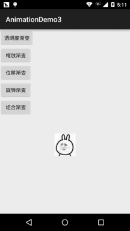
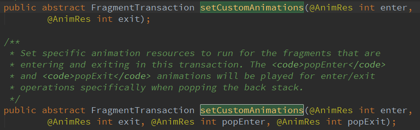
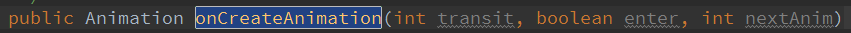
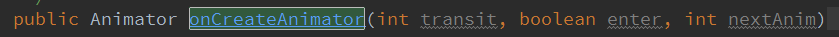
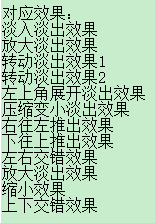
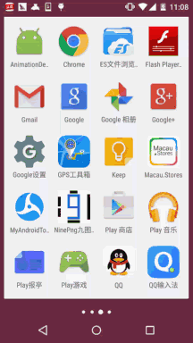

この節の導入：
この節で紹介するのは、Androidの3種類のアニメーションの2番目であるトゥイーンアニメーション（Tween）です。前に学んだフレームアニメーションとは異なり、フレームアニメーションは画像を連続再生することでアニメーション効果を模倣しますが、トゥイーンアニメーションでは開発者は指定するだけで済みます。アニメーションの開始、およびアニメーションの終了の「キーフレーム」を指定すれば、アニメーション変化の「中間フレーム」はシステムが計算して補完します！では、この節の学習を始めましょう〜
1. トゥイーンアニメーションの分類とInterpolator
Androidがサポートするトゥイーンアニメーション効果は次の5つです。あるいは4つと言ってもいいでしょう。5つ目は前述のいくつかの組み合わせにすぎません〜
- AlphaAnimation：透明度グラデーション効果。作成時に開始と終了の透明度、およびアニメーションの継続時間を指定します。透明度の変化範囲は(0,1)で、0は完全に透明、1は完全に不透明です。対応する <alphaalpha/> タグ！
- ScaleAnimationscale：縮小グラデーション効果。作成時に開始と終了のスケール比、およびスケールの基準点、さらにアニメーションの継続時間を指定する必要があります。対応する <scalescale/> タグ！
- TranslateAnimationtranslate：移動グラデーション効果。作成時に開始位置と終了位置を指定し、アニメーションの継続時間を指定するだけで済みます。対応する <translatetranslate/> タグ！
- RotateAnimationrotate：回転グラデーション効果。作成時にアニメーションの開始角度と終了角度、およびアニメーションの継続時間と回転の中心を指定します。対応する <rotaterotate/> タグ
- AnimationSetset：組み合わせグラデーション。前述の複数のグラデーションを組み合わせたもので、対応する <setset/> タグ
各種アニメーションの使い方を説明する前に、まず1つのものを説明します：Interpolator
アニメーションの変化速度を制御するために使われ、アニメーションのレンダラーと理解できます。もちろん、Interpolator インターフェースを自分で実装してアニメーションの変化速度を制御することもできます。Android ではすでに5つの実装クラスが用意されています：
- LinearInterpolatorLinearInterpolator：アニメーションは均一な速度で変化します
- AccelerateInterpolatorAccelerateInterpolator：アニメーションの開始時は速度の変化が遅く、その後加速します
- AccelerateDecelerateInterpolatorAccelerateDecelerateInterpolator：アニメーションの開始と終了では速度の変化が遅く、中間では加速します
- CycleInterpolatorCycleInterpolator：アニメーションを指定回数ループ再生し、変化速度は正弦曲線に従って変化します：Math.sin(2 * mCycles * Math.PI * input)
- DecelerateInterpolatorDecelerateInterpolator：アニメーションの開始時は速度の変化が速く、その後減速します
- AnticipateInterpolatorAnticipateInterpolator：逆方向に、最初に反対方向へ少し変化してから加速再生します
- AnticipateOvershootInterpolatorAnticipateOvershootInterpolator：最初に後ろへ戻ってから前に振り切り、一定値を超えた後、最終値に戻ります
- BounceInterpolatorBounceInterpolator：バウンド。目的値に近づくと値が跳ねます。たとえば目的値が100の場合、その後の値は85、77、70、80、90、100のように変わることがあります
- OvershottInterpolatorOvershootInterpolator：オーバーシュート。最後に目的値を超えてからゆっくり目的値へ変化します
そしてこのものは、通常、アニメーションXMLファイルを書くときに使用します。属性は android:interpolatorandroid:interpolatorで、上記に対応する値は次のとおりです：@android:anim/linear_interpolatorつまり、キャメルケースをアンダースコアに変えただけです。AccelerateDecelerateInterpolator は @android:anim/accelerate_decelerate_interpolator に対応します！
2. 各種アニメーションの詳しい解説
ここでの durationandroid:durationはすべてアニメーションの継続時間で、単位はミリ秒です〜
1) AlphaAnimation（透明度グラデーション）
anim_alpha.xml：
<alpha xmlns:android="http://schemas.android.com/apk/res/android"
android:interpolator="@android:anim/accelerate_decelerate_interpolator"
android:fromAlpha="1.0"
android:toAlpha="0.1"
android:duration="2000"/>
属性の説明：
fromAlphafromAlpha：開始透明度
toAlphatoAlpha：終了透明度
透明度の範囲は0〜1で、完全透明〜完全不透明です
2) ScaleAnimation（スケールグラデーション）
anim_scale.xml：
<scale xmlns:android="http://schemas.android.com/apk/res/android"
android:interpolator="@android:anim/accelerate_interpolator"
android:fromXScale="0.2"
android:toXScale="1.5"
android:fromYScale="0.2"
android:toYScale="1.5"
android:pivotX="50%"
android:pivotY="50%"
android:duration="2000"/>
属性の説明：
- fromXScale/fromYScalefromXScale/fromYScale：X軸/Y軸に沿ったスケールの開始比率
- toXScale/toYScaletoXScale/toYScale：X軸/Y軸に沿ったスケールの終了比率
- pivotX/pivotYpivotX/pivotY：スケールの中心点のX/Y座標。つまり自分自身の左端からの位置です。たとえば50%なら画像の中心が中心点になります。
3) TranslateAnimation（移動グラデーション）
anim_translate.xml：
<translate xmlns:android="http://schemas.android.com/apk/res/android"
android:interpolator="@android:anim/accelerate_decelerate_interpolator"
android:fromXDelta="0"
android:toXDelta="320"
android:fromYDelta="0"
android:toYDelta="0"
android:duration="2000"/>
属性の説明：
- fromXDelta/fromYDeltafromXDelta/fromYDelta：アニメーション開始位置のX/Y座標
- toXDelta/toYDeltatoXDelta/toYDelta：アニメーション終了位置のX/Y座標
4) RotateAnimation（回転グラデーション）
anim_rotate.xml：
<rotate xmlns:android="http://schemas.android.com/apk/res/android"
android:interpolator="@android:anim/accelerate_decelerate_interpolator"
android:fromDegrees="0"
android:toDegrees="360"
android:duration="1000"
android:repeatCount="1"
android:repeatMode="reverse"/>
属性の説明：
- fromDegrees/toDegreesfromDegrees/toDegrees：回転の開始/終了角度
- repeatCountrepeatCount：繰り返し回数。デフォルト値は0で1回を表します。他の値（たとえば3）の場合は4回回転します。また、値が-1またはinfiniteの場合はアニメーションが永久に停止しないことを表します。
- repeatModerepeatMode：繰り返しモードを設定します。デフォルトは restartrestartですが、repeatCountが0より大きいか、infiniteまたは-1の場合にのみ有効です。また、reversereverse は、偶数回目の再生時に逆方向の動きをすることを示します！
5) AnimationSet（組み合わせグラデーション）
非常に簡単で、前述のいくつかのアニメーションを組み合わせるだけです〜
anim_set.xml：
<set xmlns:android="http://schemas.android.com/apk/res/android"
android:interpolator="@android:anim/decelerate_interpolator"
android:shareInterpolator="true" >
<scale
android:duration="2000"
android:fromXScale="0.2"
android:fromYScale="0.2"
android:pivotX="50%"
android:pivotY="50%"
android:toXScale="1.5"
android:toYScale="1.5" />
<rotate
android:duration="1000"
android:fromDegrees="0"
android:repeatCount="1"
android:repeatMode="reverse"
android:toDegrees="360" />
<translate
android:duration="2000"
android:fromXDelta="0"
android:fromYDelta="0"
android:toXDelta="320"
android:toYDelta="0" />
<alpha
android:duration="2000"
android:fromAlpha="1.0"
android:toAlpha="0.1" />
</set>
3. 例を書いて体験してみよう
では、上で書いたアニメーションを使って例を1つ書き、トゥイーンアニメーションとは何かを体感してみましょう。まず簡単なレイアウトを作ります：activity_main.xml：
<LinearLayout xmlns:android="http://schemas.android.com/apk/res/android"
android:layout_width="match_parent"
android:layout_height="match_parent"
android:orientation="vertical">
<Button
android:id="@+id/btn_alpha"
android:layout_width="wrap_content"
android:layout_height="wrap_content"
android:text="透明度渐变" />
<Button
android:id="@+id/btn_scale"
android:layout_width="wrap_content"
android:layout_height="wrap_content"
android:text="缩放渐变" />
<Button
android:id="@+id/btn_tran"
android:layout_width="wrap_content"
android:layout_height="wrap_content"
android:text="位移渐变" />
<Button
android:id="@+id/btn_rotate"
android:layout_width="wrap_content"
android:layout_height="wrap_content"
android:text="旋转渐变" />
<Button
android:id="@+id/btn_set"
android:layout_width="wrap_content"
android:layout_height="wrap_content"
android:text="组合渐变" />
<ImageView
android:id="@+id/img_show"
android:layout_width="wrap_content"
android:layout_height="wrap_content"
android:layout_gravity="center"
android:layout_marginTop="48dp"
android:src="@mipmap/img_face.html" />
</LinearLayout>
はい、次に私たちの MainActivity に移動します。MainActivity.java同じく非常に簡単で、AnimationUtils.loadAnimation() を呼び出してアニメーションを読み込み、Viewコントロールが startAnimation を呼び出してアニメーションを開始するだけです〜
public class MainActivity extends AppCompatActivity implements View.OnClickListener{
private Button btn_alpha;
private Button btn_scale;
private Button btn_tran;
private Button btn_rotate;
private Button btn_set;
private ImageView img_show;
private Animation animation = null;
@Override
protected void onCreate(Bundle savedInstanceState) {
super.onCreate(savedInstanceState);
setContentView(R.layout.activity_main);
bindViews();
}
private void bindViews() {
btn_alpha = (Button) findViewById(R.id.btn_alpha);
btn_scale = (Button) findViewById(R.id.btn_scale);
btn_tran = (Button) findViewById(R.id.btn_tran);
btn_rotate = (Button) findViewById(R.id.btn_rotate);
btn_set = (Button) findViewById(R.id.btn_set);
img_show = (ImageView) findViewById(R.id.img_show);
btn_alpha.setOnClickListener(this);
btn_scale.setOnClickListener(this);
btn_tran.setOnClickListener(this);
btn_rotate.setOnClickListener(this);
btn_set.setOnClickListener(this);
}
@Override
public void onClick(View v) {
switch (v.getId()){
case R.id.btn_alpha:
animation = AnimationUtils.loadAnimation(this,
R.anim.anim_alpha);
img_show.startAnimation(animation);
break;
case R.id.btn_scale:
animation = AnimationUtils.loadAnimation(this,
R.anim.anim_scale);
img_show.startAnimation(animation);
break;
case R.id.btn_tran:
animation = AnimationUtils.loadAnimation(this,
R.anim.anim_translate);
img_show.startAnimation(animation);
break;
case R.id.btn_rotate:
animation = AnimationUtils.loadAnimation(this,
R.anim.anim_rotate);
img_show.startAnimation(animation);
break;
case R.id.btn_set:
animation = AnimationUtils.loadAnimation(this,
R.anim.anim_set);
img_show.startAnimation(animation);
break;
}
}
}
実行結果の画像：

へへ、なかなか面白いでしょう？さあ、実際に試してみましょう。何か変更したり、アニメーションを自由に組み合わせて、かっこいい効果を作ってみましょう〜
4. アニメーション状態の監視
アニメーションの実行状態を監視するには、アニメーションオブジェクトの setAnimationListener()
- setAnimationListener(new AnimationListener())メソッドを呼び出し、次の3つのメソッドをオーバーライドします：
- onAnimationStartonAnimationStart()：アニメーション開始
- onAnimtaionRepeatonAnimationRepeat()：アニメーション繰り返し
- onAnimationEndonAnimationEnd()：アニメーション終了
これでアニメーションの実行状態の監視が完了します〜
5. Viewにアニメーション効果を動的に設定する
まず AnimationUtils.loadAnimation()AnimationUtils.loadAnimation（アニメーションXMLファイル）を呼び出し、Viewコントロールが startAnimation(anim) を呼び出してアニメーションを開始します。これは静的な読み込み方法です。もちろん、アニメーションオブジェクトを直接作成してJavaコードで設定を完了し、startAnimation を呼び出してアニメーションを開始することもできます。
6. Fragmentにトランジションアニメーションを設定する
ここで注意すべき点は、Fragmentが使用するのはv4パッケージそれともappパッケージ配下のFragmentかどうかです！ FragmentTransaction オブジェクトのFragmentTransactionsetTransition() を呼び出してsetTransition(int transit)Fragmentに標準のトランジションアニメーションを指定します。transitの選択肢は次のとおりです：
- TRANSIT_NONETRANSIT_NONE：アニメーションなし
- TRANSIT_FRAGMENT_OPENTRANSIT_OPEN：開く形式のアニメーション
- TRANSIT_FRAGMENT_CLOSETRANSIT_CLOSE：閉じる形式のアニメーション
上記の標準的な遷移アニメーションはどちらでも呼び出せますが、異なる点はカスタムトランジションアニメーションの
setCustomAnimationssetCustomAnimations() メソッドです！
appパッケージ配下のFragment：： setCustomAnimations(int enter, int exit, int popEnter, int popExit)それぞれ追加、削除、スタックへのプッシュ、スタックからのポップ時のアニメーションです！ もう1点注意すべきことは、対応するアニメーションタイプはプロパティアニメーション（Property）であり、アニメーションファイルのルートタグは <objectAnimatorobjectAnimator>，<valueAnimator>、または前述の2つを1つの <setset> の中に入れます；
v4パッケージ配下のFragment：v4パッケージ配下では2種類の setCustomAnimations() をサポートしています。

もう1点注意すべきことは、対応するアニメーションタイプはトゥイーンアニメーション（Tween）であり、上記のViewと同じです〜
もしかすると、対応するアニメーションタイプをどうやって知るのか疑問に思うかもしれません。実際にはFragmentのソースコードで確認できます：
onCreateAnimation() メソッドの戻り値を見ればわかります：
v4パッケージ：

appパッケージ：

7. Activityに画面遷移アニメーションを設定する
Activityに画面遷移アニメーションを設定するのは非常に簡単で、呼び出すメソッドは次のとおりです：overridePendingTransition(int enterAnim, int exitAnim)
使い方はとても簡単です：startActivity(intent)または finish()finish()の後に overridePendingTransition() を追加します。
引数は順に次のとおりです：新しいActivityが入場するときのアニメーション、および古いActivityが退場するときのアニメーション
以下では、いくつか比較的シンプルでよく使われるトランジションアニメーションをみなさんに提供します～

ダウンロードポータル：Activity常用过渡动画.zip
8. APPに入った後にログイン/登録ボタンが下部からポップアップするアニメーション効果の例を書く：
実行効果図：

コード実装：
まずはレイアウトファイルです：activity_main.xml：
<RelativeLayout xmlns:android="http://schemas.android.com/apk/res/android"
xmlns:tools="http://schemas.android.com/tools"
android:layout_width="match_parent"
android:layout_height="match_parent"
android:background="#DDE2E3"
tools:context=".MainActivity">
<LinearLayout
android:id="@+id/start_ctrl"
android:layout_width="match_parent"
android:layout_height="wrap_content"
android:layout_alignParentBottom="true"
android:orientation="vertical"
android:visibility="gone">
<Button
android:id="@+id/start_login"
android:layout_width="match_parent"
android:layout_height="wrap_content"
android:background="#F26968"
android:gravity="center"
android:paddingBottom="15dp"
android:paddingTop="15dp"
android:text="登陆"
android:textColor="#FFFFFF"
android:textSize="18sp" />
<Button
android:id="@+id/start_register"
android:layout_width="match_parent"
android:layout_height="wrap_content"
android:background="#323339"
android:gravity="center"
android:paddingBottom="15dp"
android:paddingTop="15dp"
android:text="注册"
android:textColor="#FFFFFF"
android:textSize="18sp" />
</LinearLayout>
</RelativeLayout>
次にMainActivity.java：
public class MainActivity extends AppCompatActivity {
private LinearLayout start_ctrl;
@Override
protected void onCreate(Bundle savedInstanceState) {
super.onCreate(savedInstanceState);
setContentView(R.layout.activity_main);
start_ctrl = (LinearLayout) findViewById(R.id.start_ctrl);
//设置动画，从自身位置的最下端向上滑动了自身的高度，持续时间为500ms
final TranslateAnimation ctrlAnimation = new TranslateAnimation(
TranslateAnimation.RELATIVE_TO_SELF, 0, TranslateAnimation.RELATIVE_TO_SELF, 0,
TranslateAnimation.RELATIVE_TO_SELF, 1, TranslateAnimation.RELATIVE_TO_SELF, 0);
ctrlAnimation.setDuration(500l); //设置动画的过渡时间
start_ctrl.postDelayed(new Runnable() {
@Override
public void run() {
start_ctrl.setVisibility(View.VISIBLE);
start_ctrl.startAnimation(ctrlAnimation);
}
}, 2000);
}
}
コメントは非常に明確に書かれているので、ここでは詳しく説明しません。TranslateAnimation.RELATIVE_TO_SELFについて疑問がある場合は、自分でGoogleやBaiduで検索してください。紙面の都合上（私が怠けているだけ）、ここでは書きません。かなり簡単です～

9. この節のコード例のダウンロード
この節のまとめ：
このセクションでは、Androidの2番目のアニメーション（トゥイーンアニメーション）を詳しく解説し、4つのアニメーションの詳細、アニメーションリスナーの設定、そしてView、Fragment、Activityにアニメーションを設定する方法を説明しました。最後に、アプリに入った後にログインボタンと登録ボタンが下部からポップアップする例も書きました。少し長いかもしれませんが、どれも非常に理解しやすいものです。読んだ後にはきっと多くの収穫があると信じています！では、このセクションはここまでです。ありがとうございました～
{kind=link}
クリックしてノートを共有